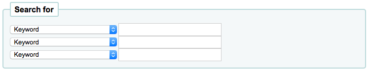

Searching
Search history
If you have your EnableSearchHistory preference set to keep your search history then you can access this information by clicking on your username in the top right of the staff client and choosing ‘Search history’.

From this page you will see your bibliographic search history

And your authority search history.

Advanced search prefixes
The following prefixes can be added to search terms in the keyword search box to limit items returned
ti: title search
ex. ti:hamlet
su: subject search
ex. su:cooking
pb: publisher search
ex. pb:penguin
au: author search
ex. au:rowling
su-geo: geographic subjects
ex. su-geo:wales and kw:description and kw:travel
bc: barcode
ex. bc:502326000912
lex: lexile
levels lex:510
Guide to searching
This brief guide will explain a chart that shows a sample of how a MARC21 database can be configured, as well as a brief introductory searching guide. The indexing fields described in this document relate to the bibliographic data and does not address authority database indexing.
Indexing and searching description
Koha’s databases are indexed by the Zebra open-source software. The overview to the documentation describes Zebra as:
“…Zebra is a high-performance, general-purpose structured text indexing and retrieval engine. It reads records in a variety of input formats (eg. email, XML, MARC) and provides access to them through a powerful combination of Boolean search expressions and relevance-ranked free-text queries.
Zebra supports large databases (tens of millions of records, tens of gigabytes of data). It allows safe, incremental database updates on live systems. Because Zebra supports the industry-standard information retrieval protocol, Z39.50, you can search Zebra databases using an enormous variety of programs and toolkits, both commercial and free, which understands this protocol…” Zebra - User’s Guide and Reference, p. 1, https://software.indexdata.com/zebra/doc/idzebra.pdf
This brief guide will explain a chart that shows a sample of how a MARC21 database can be configured, as well as a brief introductory searching guide. The indexing fields described in this document relate to the bibliographic data and does not address authority database indexing.
Note
The indexing described in this document is the set used by SouthEastern University. Your local indexing may vary.
Indexing configuration
There are three configuration files that Koha uses while indexing.
The first configuration file (etc/zebradb/biblios/etc/bib1.att) contains the Z39.50 bib-1 attribute list, plus the Koha local use attributes for Biblio Indexes, Items Index, and Fixed Fields and other special indexes. The Z39.50 Bib-1 profile is made up of several different types of attributes: Use, Relation, Position, Structure, Truncation, and Completeness. The bib-1 ‘Use’ attribute is represented on the chart; the other attributes are used primarily when doing searches. While there are over 150+ use attributes that could be used to define your indexing set, it’s unlikely that you will choose to use them all. The attributes you elect to use are those that become the indexing rules for your database. The other five attribute sets define the various ways that a search can be further defined, and will not specifically be addressed in this document. For a complete list of the standard Bib-1 attributes, go to http://www.loc.gov/z3950/agency/defns/bib1.html.
The second file is etc/zebradb/marc_defs/[marc21|unimarc]/biblios/record.abs if you use grs1 indexing [the default until 3.16] or etc/zebradb/marc_defs/[marc21|unimarc]/biblios/biblio-koha-indexdefs.xml if you use dom indexing [the default from 3.18]. Either files contains the abstract syntax which maps the MARC21 tags to the set of Use Attributes you choose to use. To be more precise the xml file to be activate needs to be transform into biblio-zebra-indexdefs.xsl, read the head of biblio-zebra-indexdefs.xsl to know more about this topic. The rules established in this file provides a passable Bath level 0 and 1 service, which includes author, title, subject, keyword and exact services such as standard identifiers (LCCN, ISBN, ISSN, etc.)
The third file (etc/zebradb/ccl.properties) is the Common Command Language (CCL) field mappings. This file combines the bib-1 attribute set file and the abstract file and adds the qualifiers, usually known as index names. The qualifiers, or indexes, for this database are: pn, cpn, cfn, ti, se, ut, nb, ns, sn, lcn, callnum, su, su-to, su-geo, su-ut, yr,pubdate, acqdate, ln, pl, ab, nt, rtype, mc-rtype, mus, au, su-na, kw, pb, ctype, and an.
The Koha Indexing Chart summarizes the contents of all three of these files in a more readable format. The first two columns labeled Z39.50 attribute and Z39.50 name matches the Z39.50 bib-1 attributes file. The third column labeled MARC tags indexed is where you find which MARC tags are mapped to an attribute. The fourth column labeled Qualifiers identifies the search abbreviations used in the internal CCL query. The following description provides a definition for the word ‘qualifiers’.
Qualifiers are used to direct the search to a particular searchable index, such as title (ti) and author indexes (au). The CCL standard itself doesn’t specify a particular set of qualifiers, but it does suggest a few shorthand notations. You can customize the CCL parser to support a particular set of qualifiers to reflect the current target profile. Traditionally, a qualifier would map to a particular use-attribute within the BIB-1attribute set. It is also possible to set other attributes, such as the structure attribute.
In the MARC tags indexed column, there are some conventions used that have specific meanings. They are:
A three digit tag (100) means that all subfields in the tag can be used in a search query. So, if you enter a search for ‘Jackson’ as an author, you will retrieve records where Jackson could be the last name or the first name.
A three digit tag that has a ‘$’ followed by a letter (600$a) means that a search query will only search the ‘a’ subfield.
A three digit tag that is followed by a ‘:’ and a letter (240:w) means that a search query can be further qualified. The letter following the ‘:’ identifies how to conduct the search. The most common values you’ll see are ‘w’ (word), ‘p’ (phrase), ‘s’ (sort), and ‘n’ (numeric).
The contents of the MARC tags, subfields, and/or fixed field elements that are listed in this chart are all indexed. You’ll see that every attribute line is not mapped to a specific qualifier (index)-LC card number, line 9 is one example. However, every indexed word (a string of characters preceded and succeeded by a space) can be searched using a keyword (kw) search. So, although an LC card number specific index doesn’t exist, you can still search by the LCCN since tag 010 is assigned to the LC-card-number attribute. To verify this, enter 72180055 in the persistent search box. You should retrieve The gods themselves, by Isaac Asimov.
Examples of fixed field elements indexing can be seen on the chart between Attribute 8822 and Attribute 8703. These attributes are most commonly used for limiting. The fixed field attributes currently represent the BK codes. Other format codes, if needed, could be defined.
Basic searching
The search box that library staff and library patrons will see most often is the persistent search box at the top of the page. Koha interprets the searches as keyword searches.

To start a search, you enter a word or multiple words in the search box. When a single word is entered, a keyword search is performed. You can check this out by typing one word into the form and note the number of results located. Then, repeat the search with a minor change. In front of the search word, type ‘kw=’ followed by the same search term. The results will be identical.
When you have more than one word in the search box, Koha will still do a keyword search, but a bit differently. Each word will be searched on its own, then the Boolean connector ‘and’ will narrow your search to those items with all words contained in matching records.
Suppose you want to find material about how libraries are using mashups. You’ll select the major words and enter them into the persistent search box.
The response to this search is:
The order of the words does not affect the retrieval results, so you could also enter the search as “mashups library”. The response to this search is results
Too many words in the search box will find very few matches, as the following example illustrates:

Advanced searching
When you can’t find the most appropriate material with a general search, you can move to the Advanced Search page by clicking on the Search option on the persistent toolbar.

The Advanced Search page offers many ways to limit the results of your search. You can search using the Boolean operators AND, OR, and NOT; limit by item type; limit by year and language; limit by subtypes audience, content, format, or additional content types; by location and by availability.
The first limiting section on the Advanced Search page provides a quick and simple way to use the Boolean operators in your search. Note that this display depends on a system preference setting. This option can be found on the Administration > System Preferences > Searching page. The option called expandedSearchOption must be set to ‘show’ to see the following display.

In this section you can choose among the many indexes by clicking on the arrow in the first box. The blank box that follows is where you enter your first search term or terms. On the second line, you can choose the Boolean operator you want to use in your search. The options are ‘and’, ‘or’, and ‘not’. Then, you would again choose the index to search, followed by the second term or terms. If you have more concepts you want to include in your search, you can click the [+] to add another line for your search.
A sample search is shown next, followed by its results:
When you use the Boolean operators to broaden or narrow a search, remember the action of each operator. The ‘and’ operator narrows the results you’ll retrieve because the search will retrieve the records that include all your search terms. The ‘or’ operator expands the results because the search will look for occurrences of all of your search terms. The ‘not’ operator excludes records with the term that follows the operator.
Note: If you leave this expandedSearchOption set to ‘don’t show’, this is the display you will see:

The Advanced Search page then shows the multiple kinds of limits that can be applied to your search results. Either check a box or select from the drop down menus to narrow your search. You will type the year, year range, or a ‘greater than (>)’ or ‘less than (<)’ year.
Finally, you can choose how the results will be sorted. The pre-defined sort options are in the final area of the Advanced Search screen.

The default sort is by relevance, although you can choose to sort by author, by title, by call number, by dates, or by popularity (which uses the information on total issues found in the items table). If you would prefer a different default sort, you can set defaultSortField to one of the other choices in Administration > System Preferences > Searching.
Search results
After performing a search the number of results found for your search will appear above the results.

To the left, you will find filters, or facets, to refine your search. Currently available facets include:
Availability
Authors
Collections
Home library, holding library or both
Note
This depends on your setting for the DisplayLibraryFacets system preference.
Item types
Locations
Series
Places (geographic name headings)
Topics (subject headings)
Titles (uniform title headings)
When there are more than five facets in a category, a ‘Show more’ link will appear. You can control the display of the facets using the following systempreferences: displayFacetCount, DisplayLibraryFacets, FacetLabelTruncationLength, FacetMaxCount, maxRecordsForFacets, and UNIMARCAuthorsFacetsSeparator.
Along the top, under the number of results, there are buttons to do different actions on selected records.
‘Select all’: selects all the records on the page.
‘Clear all’: unselects all the records that were selected.
‘Unhighlight’: removes the red/yellow highlighting of the search term(s).
‘Add to cart’: adds selected record(s) to the cart.
Note
The intranetbookbag system preference needs to be set to ‘Show’ in order for that button to appear.
‘Add to list’: adds selected record(s) to the chosen list.
‘Place hold’: places a hold on the selected record(s).
‘Browse selected records’: goes to the detailed record page of the selected record(s). Clicking on ‘Next’ or ‘Previous’ from the detailed record will bring you to the next selected record.
Note
The BrowseResultSelection system preference needs to be enabled in order for that button to appear.
‘Z39.50/SRU search’: opens the Z39.50/SRU search popup window with the fields pre-filled with the search terms.
‘Sort’: lets you choose a sorting field and order.
Note
By default your search results will be sorted based on your defaultSortField and defaultSortOrder system preferences values.
Under each title on your results list a series of values from your leader will appear. It is important to note that this has nothing to do with the item types or collection codes you have applied to your records, this data is all pulled from your fixed fields. This can be turned on or off with the DisplayIconsXSLT system preference.
At the bottom, under each record, there are more action links:
‘Holds’: brings you to that record’s ‘Holds’ tab.
‘Request article’: brings you to that record’s ‘Article requests’ tab.
‘Edit record’: brings you to that record’s MARC framework for editing.
‘Edit items’: brings you to that record’s item list for editing.
‘OPAC view’: brings you to that record’s detail page in the OPAC.
Note
‘OPAC view’ needs the OPACBaseURL system preference to be properly set.
To the right of each record are the holdings information and availability.
Note
Even if you filtered on one library location all locations that hold the item will appear on the search results.
Important
An item’s hold status doesn’t not affect whether or not the item is ‘available’ until the item is in ‘waiting’ status. Items with on-shelf holds will show as available until a librarian has pulled them from the shelf and checked the item in make it show ‘waiting’.
Item search
If you are looking for specific items you can use the item search engine in the staff client to find them.
Get there: Search > Item search

You can also access the item search from the link ‘Go to item search’ at the top of the advanced search page in the staff client.

Either of those links will open up a item specific search engine.

Using the search form that is presented you can find a list of specific items that can be output to the screen, to a CSV file or to a barcode file.
You can add more search fields to this form by going to the item search fields section in the Administration module.
If your results are printed to the screen you will have the option to narrow your search further using filters at the top.

Common command language searching
Koha uses the Common Command Language (CCL) (ISO 8777) as its internal search protocol. Searches initiated in the graphical interface use this protocol as well, although the searcher doesn’t know which indexes, operators and limiters are available and being used to conduct their search. The searcher can use the Advanced Search when more precise results set are desired and where the search indexes are somewhat known. However, some library users and many library staff prefer using a command based structure. This part of the document will present and explain the use of the Koha command based structure. The indexes, operators, and limiters used are identical to those used in the graphical interface.
Indexes
The CCL standard itself doesn’t specify a particular set of qualifiers (indexes), but it does suggest a few short-hand notations such as ‘ti’, ‘au’, and ‘su’. Koha has a default set of indexes; it’s possible to customize that set by adding needed indexes based on local requirements. A qualifier (index) maps to a particular use-attribute within the Z39.50 BIB-1 attribute set. The complete Z39.50 Bib-1 Attribute can be viewed at http://www.loc.gov/z3950/agency/defns/bib1.html.
The standard Koha set of indexes is a fairly common example of MARC21 indexing rules. The indexes that are defined in Koha are indexes typically used by other integrated library systems. The defined Z39.50 Bib-1 Attribute mapped to the indexes include:
Bib-1 Attribute |
Qualifier (index) |
|---|---|
Personal-name |
pn |
Corporate-name |
cpn |
Conference-name |
cfn |
Title |
ti |
Title-series |
se |
Title-uniform |
ut |
ISBN |
nb |
ISSN |
ns |
Local number |
sn |
Local-classification |
lcn and callnum |
Subject |
su, su-to, su-geo, su-ut |
Pubdate |
yr,pubdate |
Date-of-Acquisition |
acqdate |
Language |
ln |
Place-of-publication |
pl |
Abstract |
ab |
Notes |
nt |
Record-type |
rtype, mc-rtype, mus |
Author |
au, aut |
Subject-person-name |
su-na |
Any (keyword) |
kw |
Publisher |
pb |
Content-type |
ctype |
Koha-Auth-Number |
an |
Author-personal-bibliography |
aub |
Author-in-order |
auo |
Table: Attributes
Refer to the Koha Indexing Chart for the MARC21 tags mapped to each Bib-1 Attribute and index combination.
Audience examples
aud:a Preschool
aud:b Primary
aud:c Pre-Adolescent
aud:d Adolescent
aud:e Adult
aud:f Specialized
aud:g General
aud:j Juvenile
Contents examples
fic:1 Fiction
fic:0 Non Fiction
bio:b Biography
mus:j Musical recording
mus:I Non musical record
Search syntax
In the persistent search box, single words generally retrieve large sets. To narrow a search, you can use multiple words. Koha automatically uses the ‘and’ Boolean operator to create a set of records matching your input. When you want to narrow the search to an author or a title or a subject or some other specific field or use a Boolean operator, there isn’t an obvious way to accomplish that specificity. The library user can, of course, go to the Advanced Search page; however, if you know how to construct a CCL search, you can achieve more specificity while using the persistent search box on any page.
There is a specific order to the CCL search syntax. Although it can be used for simple searches, it is an especially effective way to perform complex searches, as it affords you a great deal of control over your search results. To construct a CCL search, first enter a desired index code, then an equal sign, followed by your search word(s). Following are examples of simple CCL searches.
ti=principles of accounting
au=brown joseph
su=poetry
su-na=Shakespeare
kw=marlin
You can refine your search by combining search terms with Boolean operators ‘and’, ‘or’, or ‘not’. Following are examples of searches using Boolean operators.
ti=principles of accounting and au=brown joseph
su=poetry not su-na=Shakespeare
kw=communication and su=debate
You can also choose to search for things that start with a character or series of characters
ti,first-in-subfield=C (will show you all titles that start with the letter ‘C’)
Other string location searches can be performed with the following keywords:
rtrn : right truncation
ltrn : left truncation
lrtrn : left and right truncation
st-date : type date
st-numeric : type number (integer)
ext : exact search on whole subfield (does not work with icu)
phr : search on phrase anywhere in the subfield
startswithnt : subfield starts with
Using specific indexes and Boolean operators are not the only way a search can be refined. You can also refine your search as a phrase when looking for a title, author, or subject. The syntax for this search is index,phr=search words.
To illustrate the results of various search types, a search was done for the words ‘supreme court’. The results illustrate that the search index and the word order make a difference in search results. Only the results count and the search itself is in these examples. The search executed will always be between the single quotes.


You can also choose to use limiters in your search query. Some common limiters include dates, languages, record types, and item types. In the Advance Search, you can either click a box or key in data to limit your search. You can also apply the same limits with CCL by using the syntax in the following examples. In all
By Date: su=supreme court and yr,st-numeric=>2000

When you limit by date, you can use the ‘>’ (greater than), ‘<’ (less than), ‘=’ (equal), or ‘yyyy-yyyy’ (range) symbols.
By Item Type: su=nursing and itype:BK
Each library will have a different set of item types defined in their circulation configuration. When you set up item types, you define a code and a name for each one. The name will appear on the Advance Search page. The code you assigned is used as a CCL search limit, formatted as ‘itype:x’, where ‘x’ is the assigned code. The initial set of item types in Koha will usually be edited to reflect your collections, so your item type limiters may be different than the initial ones. The initial item type limiters follow.
itype:BKS Books, Booklets, Workbooks
itype:SR Audio Cassettes, CDs
itype:IR Binders
itype:CF CD-ROMs, DVD-ROMs, General Online Resources
itype:VR DVDs, VHS
itype:KT Kit
itype:AR Models
itype:SER Serials
By format: su=supreme court not l-format:sr

The format limiters are derived from a combination of LDR, 006 and 007 positions. The formats that are currently defined are the following.
l-format:ta Regular print
l-format:tb Large print
l-format:fk Braille
l-format:sd CD audio
l-format:ss Cassette recording
l-format:vf VHS tape
l-format:vd DVD video
l-format:co CD software
l-format:cr Website
By content type: su=supreme court not ctype:l

The content types are taken from the 008 MARC tag, positions 24-27.
There are two other limiter types that are not described in this document. They are: Audience and Content. The only difference in the syntax of the CCL is the actual limiter. They are reproduced here just in case you would like to use these limiters.
Koha search indexes
Zebra
By default, not all fields are indexed in the Zebra search engine, but many are. Below are the MARC21 fields that are indexed in Zebra.
Field |
Description |
|---|---|
Leader/06 |
Record-type, rtype |
Leader/07 |
Bib-level |
Leader/06-07 |
Material-type |
001 |
Control-number |
005 |
Date/time-last-modified, dtlm, date-time-last-modified |
007 |
Microform-generation:n:range(data,11,1), Material-type,ff7-00:w:range(data,0,1), ff7-01:w:range(data,1,1), ff7-02:w:range(data,2,1), ff7-01-02:w:range(data,0,2) |
008 |
date-entered-on-file:n:range(data,0,5), date-entered-on-file:s:range(data,0,5), pubdate:w:range(data,7,4), pubdate:n:range(data,7,4), pubdate:y:range(data,7,4), pubdate:s:range(data,7,4), pl:w:range(data,15,3), ta:w:range(data,22,1), ff8-23:w:range(data,23,1), ff8-29:w:range(data,29,1), lf:w:range(data,33,1), bio:w:range(data,34,1), ln:n:range(data,35,3), ctype:w:range(data,24,4), Record-source:w:range(data,39,0) |
010 |
LC-card-number, Identifier-standard |
011 |
LC-card-number, Identifier-standard |
015 |
BNB-card-number, BGF-number, Number-db, Number-natl-biblio, Identifier-standard |
017 |
Number-legal-deposit, Identifier-standard |
018 |
Identifier-standard |
020$a |
ISBN:w, Identifier-standard:w |
020 |
Identifier-standard |
022$a |
ISSN:w, Identifier-standard:w |
022 |
Identifier-standard |
023 |
Identifier-standard |
024$a |
Identifier-other |
024 |
Identifier-standard |
025 |
Identifier-standard |
027 |
Report-number, Identifier-standard |
028 |
Number-music-publisher, Identifier-standard |
030 |
CODEN, Identifier-standard |
034 |
Map-scale |
035 |
Other-control-number |
037 |
Identifier-standard, Stock-number |
040 |
Code-institution, Record-source |
041$a |
ln-audio |
041$h |
language-original |
041$j |
ln-subtitle |
041 |
ln |
043 |
Code-geographic |
050$b |
LC-call-number:w, LC-call-number:p, LC-call-number:s |
050 |
LC-call-number:w, LC-call-number:p, LC-call-number:s |
052 |
Geographic-class |
060 |
NLM-call-number |
070 |
NAL-call-number |
080 |
UDC-classification |
082 |
Dewey-classification:w, Dewey-classification:s |
086 |
Number-govt-pub |
100$9 |
Cross-Reference:w, Koha-Auth-Number |
100$a |
Author,Author:p, Author:s, Editor, Author-personal-bibliography, Author-personal-bibliography:p, Author-personal-bibliography:s |
100 |
Author, Author-title, Author-name-personal, Name, Name-and-title, Personal-name |
110$9 |
Koha-Auth-Number |
110 |
Author, Author-title, Author-name-corporate, Name, Name-and-title, Corporate-name |
111$9 |
Koha-Auth-Number |
111 |
Author, Author-title, Author-name-corporate, Name, Name-and-title, Conference-name |
130$n |
Thematic-number |
130$r |
Music-key |
130$9 |
Koha-Auth-Number |
130 |
Title, Title-uniform |
210 |
Title, Title-abbreviated |
211 |
Title, Title-abbreviated |
212 |
Title, Title-other-variant |
214 |
Title, Title-expanded |
222 |
Title, Title-key |
240$r |
Music-key |
240$n |
Thematic-number |
240 |
Title:w, Title:p, Title-uniform |
243$n |
Thematic-number |
243$r |
Music-key |
243 |
Title:w, Title:p, Title-collective |
245$a |
Title-cover:w, Title-cover:p, Title-cover:s, Title:w, Title:p, Title:s |
245$c |
Author, Author-in-order:w, Author-in-order:p, Author-in-order:s |
245$9 |
Cross-Reference:w, Koha-Auth-Number |
245 |
Title:w, Title:p |
246 |
Title, Title:p, Title-abbreviated, Title-expanded, Title-former |
247 |
Title, Title:p, Title-former, Title-other-variant, Related-periodical |
260$a |
pl:w, pl:p |
260$b |
Publisher:w, Publisher:p |
260$c |
copydate, copydate:s |
260 |
Provider, pl |
264 |
Provider |
300 |
Extent:w, Extent:p |
400$a |
Name-and-title |
400$t |
Author-title, Name-and-title, Title, Title-series |
400$9 |
Koha-Auth-Number |
400 |
Author, Author-name-personal, Name, Personal-name |
410 |
Author, Corporate-name |
410$a |
Name-and-title |
410$t |
Author-title, Title, Title-series |
410$9 |
Koha-Auth-Number |
410 |
Author-name-corporate, Name |
411 |
Author, Conference-name |
411$a |
Name-and-title |
411$t |
Author-title, Title-series |
411 |
Author-name-corporate, Name |
440$a |
Title-series:w, Title-series:p |
440$9 |
Koha-Auth-Number |
440 |
Title-series:w, Title-series:p, Title, Title-series |
490$a |
Title-series:w, Title-series:p |
490 |
Title, Title-series |
490$9 |
Koha-Auth-Number |
500 |
Note:w, Note:p |
502 |
Material-type |
505$r |
Author |
505$t |
Title |
505 |
Note:w, Note:p |
510 |
Indexed-by |
520 |
Abstract:w, Abstract:p |
521$a |
lex:n |
526$c |
arl, arl:n |
526$d |
arp, arp:n |
590 |
Note:w, Note:p |
600$a |
Name-and-title, Name, Personal-name, Subject-name-personal, Subject |
600$t |
Name-and-title, Title, Subject |
600$9 |
Koha-Auth-Number |
600 |
Name, Personal-name, Subject-name-personal, Subject |
610$a |
Name-and-title |
610$t |
Name-and-title, Title |
610$9 |
Koha-Auth-Number |
610 |
Name, Subject, Corporate-name |
611 |
Conference-name |
611$a |
Name-and-title |
611$t |
Name-and-title, Title |
611$9 |
Koha-Auth-Number |
611 |
Name, Subject |
630$n |
Thematic-number |
630$r |
Music-key |
630$9 |
Koha-Auth-Number |
630 |
Subject |
650$9 |
Koha-Auth-Number |
650 |
Subject, Subject:p |
651$9 |
Koha-Auth-Number |
651 |
Name-geographic, Subject,Subject:p |
652$9 |
Koha-Auth-Number |
653$9 |
Koha-Auth-Number |
653 |
Subject, Subject:p |
654$9 |
Koha-Auth-Number |
654 |
Subject |
655$9 |
Koha-Auth-Number |
655 |
Subject |
656$9 |
Koha-Auth-Number |
656 |
Subject |
657$9 |
Koha-Auth-Number |
657 |
Subject |
690$9 |
Koha-Auth-Number |
690 |
Subject, Subject:p |
700$9 |
Cross-Reference, Koha-Auth-Number |
700$a |
Author, Author:p |
700$n |
Thematic-number |
700$r |
Music-key |
700$t |
Author-title, Name-and-title, Title, Title-uniform |
700 |
Author, Author-name-corporate, Author-name-personal, Name, Editor, Personal-name |
710 |
Author, Corporate-name |
710$t |
Author-title, Name-and-title, Title, Title-uniform |
710$a |
Name-and-title |
710$9 |
Koha-Auth-Number |
710 |
Author, Name |
711$a |
Name-and-title |
711$t |
Author-title, Title, Title-uniform |
711$9 |
Koha-Auth-Number |
711 |
Author-name-corporate, Name, Conference-name |
730$n |
Thematic-number |
730$r |
Music-key |
730$9 |
Koha-Auth-Number |
730 |
Title, Title-uniform |
740 |
Title, Title-other-variant |
773$t |
Host-item |
780$t |
Title |
780$w |
Record-control-number |
780 |
Title, Title-former, Related-periodical |
785$w |
Record-control-number |
785 |
Related-periodical |
787$w |
Record-control-number |
800$a |
Name-and-title |
800$t |
Author-title, Name-and-title, Title, Title-series |
800$9 |
Koha-Auth-Number |
800 |
Author, Author-name-personal, Name, Personal-name |
810$a |
Name-and-title |
810$t |
Author-title, Name-and-title, Title, Title-series |
810$9 |
Koha-Auth-Number |
810 |
Author, Corporate-name, Author-name-corporate, Name |
811$a |
Name-and-title |
811$9 |
Koha-Auth-Number |
811$t |
Author-title, Name-and-title, Title, Title-series |
811 |
Author, Author-name-corporate, Name, Conference-name |
830$9 |
Koha-Auth-Number |
830 |
Title, Title-series |
840 |
Title, Title-series |
942$0 |
totalissues:n, totalissues:s |
942$2 |
cn-bib-source |
942$6 |
cn-bib-sort:n, cn-bib-sort:s |
942$c |
itemtype:w |
942$n |
Suppress:w, Suppress:n |
942$h |
cn-class |
942$i |
cn-item |
942$k |
cn-prefix |
942$m |
cn-suffix |
952$0 |
withdrawn:n, withdrawn:w |
952$1 |
lost, lost:n |
952$2 |
classification-source |
952$3 |
materials-specified |
952$4 |
damaged:n, damaged:w |
952$5 |
restricted:n, restricted:w |
952$6 |
cn-sort:n, cn-sort:s |
952$7 |
notforloan:n, notforloan:w |
952$8 |
ccode |
952$9 |
itemnumber:n, itemnumber:s |
952$a |
homebranch |
952$b |
holdingbranch |
952$c |
location |
952$d |
Date-of-acquisition, Date-of-acquisition:d, Date-of-acquisition:s |
952$e |
acqsource |
952$f |
coded-location-qualifier |
952$g |
price |
952$j |
stack:n, stack:w |
952$l |
issues:n, issues:w, issues:s |
952$m |
renewals:n, renewals:w |
952$n |
reserves:n, reserves:w |
952$o |
Local-classification:w, Local-classification:p, Local-classification:s |
952$p |
barcode, barcode:n |
952$q |
onloan:n, onloan:w |
952$r |
datelastseen |
952$s |
datelastborrowed |
952$t |
copynumber |
952$u |
uri:u |
952$v |
replacementprice |
952$w |
replacementpricedate |
952$y |
itype:w |
952$z |
Note:w, Note:p |
999$c |
Local-Number:n, Local-Number:w, Local-Number:s |
999$d |
biblioitemnumber:n, biblioitemnumber:w, biblioitemnumber:s |
Table: Indexes
Elasticsearch indexes
The indexes for elasticsearch are available in the mappings.yaml file in :: admin/searchengine/elasticsearch.
They are copied here for easier reference.
Bibliographic record indexes
MARC21 bibliographic indexes
Index name |
MARC fields |
|---|---|
abstract |
520 |
acqsource |
952$e |
arl |
526$c |
arp |
526$d |
author |
100$a |
110$a |
|
111$a |
|
245$c |
|
700$a |
|
author-in-order |
245$c |
author-name-corporate |
110 |
111 |
|
711 |
|
810 |
|
811 |
|
author-name-personal |
100 |
400 |
|
700 |
|
800 |
|
author-personal-bibliography |
100$a |
author-title |
100 |
110 |
|
111 |
|
400$t |
|
410$t |
|
411$t |
|
700$t |
|
710$t |
|
711$t |
|
800$t |
|
810$t |
|
811$t |
|
barcode |
952$p |
bgf-number |
015 |
bib-level |
leader/7 |
biblioitemnumber |
999$d |
bio |
008/34 |
bnb-card-number |
015 |
ccode |
952$8 |
classification-source |
952$2 |
cn-bib-sort |
942$6 |
cn-bib-source |
942$2 |
cn-class |
942$h |
cn-item |
942$i |
cn-prefix |
942$k |
cn-sort |
952$6 |
cn-suffix |
942$m |
code-geographic |
043 |
code-institution |
040 |
coded-location-qualifier |
952$f |
coden |
030 |
conference-name |
111 |
411 |
|
611 |
|
711 |
|
811 |
|
control-number |
001 |
copydate |
260$c |
copynumber |
952$t |
corporate-name |
110 |
410 |
|
610 |
|
710 |
|
810 |
|
cross-reference |
100$9 |
245$9 |
|
700$9 |
|
ctype |
008/24-27 |
curriculum |
658$a $b $c |
damaged |
952$4 |
date-entered-on-file |
008/00-05 |
date-of-acquisition |
952$d |
date-of-publication |
008/07-10 |
date-time-last-modified |
005 |
datelastborrowed |
952$s |
datelastseen |
952$r |
dewey-classification |
082 |
dissertation-information |
502 |
editor |
100$a |
700 |
|
extent |
300 |
ff7-00 |
007/00 |
ff7-01 |
007/01 |
ff7-01-02 |
007/00-01 |
ff7-02 |
007/02 |
ff8-23 |
008/23 |
ff8-29 |
008/29 |
geographic-class |
052 |
holdingbranch |
952$b |
homebranch |
952$a |
host-item |
773$a $t |
host-item-number |
773$9 |
identifier-other |
024$a |
identifier-publisher-for-music |
028 |
identifier-standard |
010 |
011 |
|
015 |
|
017 |
|
018 |
|
020$a |
|
022$a |
|
index-term-genre |
655$a |
index-term-uncontrolled |
653$a |
indexed-by |
510 |
interest-age-level |
521$a |
interest-grade-level |
521$a |
isbn |
020$a |
issn |
022$a |
issues |
952$l |
itemnumber |
952$9 |
itemtype |
942$c |
952$y |
|
koha-auth-number |
100$9 |
110$9 |
|
111$9 |
|
130$9 |
|
245$9 |
|
400$9 |
|
410$9 |
|
440$9 |
|
490$9 |
|
600$9 |
|
610$9 |
|
611$9 |
|
630$9 |
|
648$9 |
|
650$9 |
|
651$9 |
|
652$9 |
|
653$9 |
|
654$9 |
|
655$9 |
|
656$9 |
|
657$9 |
|
662$9 |
|
690$9 |
|
691$9 |
|
696$9 |
|
697$9 |
|
698$9 |
|
699$9 |
|
700$9 |
|
710$9 |
|
711$9 |
|
730$9 |
|
751$9 |
|
796$9 |
|
797$9 |
|
797$9 |
|
798$9 |
|
799$9 |
|
800$9 |
|
810$9 |
|
811$9 |
|
830$9 |
|
896$9 |
|
897$9 |
|
898$9 |
|
899$9 |
|
language-original |
041$h |
lc-call-number |
050$b |
lc-card-number |
010 |
011 |
|
lexile-number |
521$a |
lf |
008/33 |
llength |
leader/00-04 |
ln |
008/35-37 |
ln-audio |
041$a |
ln-subtitle |
041$j |
local-classification |
952$o |
local-number |
999$c |
location |
952$c |
lost |
952$1 |
map-scale |
034 |
material-type |
007 |
materials-specified |
952$3 |
microform-generation |
007/11 |
music-key |
130$r |
240$r |
|
243$r |
|
630$r |
|
700$r |
|
730$r |
|
nal-call-number |
070 |
name |
100 |
110 |
|
111 |
|
400 |
|
600$a |
|
610 |
|
611 |
|
700 |
|
710 |
|
711 |
|
800 |
|
810 |
|
811 |
|
name-and-title |
100 |
110 |
|
111 |
|
400$a $t |
|
410$a |
|
411$a |
|
600$a $t |
|
610$a $t |
|
611$a $t |
|
700$t |
|
710$a $t |
|
711$a |
|
800$a $t |
|
810$a $t |
|
811$a $t |
|
name-geographic |
651 |
751$a |
|
nlm-call-number |
060 |
not-onloan-count |
999$x |
note |
500 |
505 |
|
590 |
|
952$z |
|
notforloan |
952$7 |
number-db |
015 |
number-govt-pub |
086 |
number-legal-deposit |
017 |
number-local-acquisition |
952$i |
number-natl-biblio |
015 |
onloan |
952$q |
other-control-number |
035 |
personal-name |
100 |
400 |
|
600$a |
|
700 |
|
800 |
|
pl |
008/15-17 |
price |
952$g |
provider |
260 |
264 |
|
publisher |
260$b |
reading-grade-level |
521$a |
record-control-number |
770$w |
772$w |
|
773$w |
|
774$w |
|
775$w |
|
776$w |
|
777$w |
|
780$w |
|
785$w |
|
787$w |
|
800$w |
|
810$w |
|
811$w |
|
830$w |
|
record-source |
008/39 |
related-periodical |
247 |
780 |
|
785 |
|
renewals |
952$m |
replacementprice |
952$v |
replacementpricedate |
952$w |
report-number |
027 |
reserves |
952$n |
restricted |
952$5 |
rtype |
leader/06 |
stack |
952$j |
stock-number |
037 |
su-geo |
651$a |
subject |
600$a |
600$t |
|
610$a |
|
611 |
|
630$n |
|
630$r |
|
650$a |
|
650$b |
|
650$c |
|
650$d |
|
650$v |
|
650$x |
|
650$y |
|
650$z |
|
651 |
|
653$a |
|
subject-name-personal |
600$a |
suppress |
942$n |
ta |
008/22 |
thematic-number |
130$n |
240$n |
|
243$n |
|
630$n |
|
700$n |
|
730$n |
|
title |
130 |
210 |
|
211 |
|
212 |
|
214 |
|
222 |
|
240 |
|
245$a |
|
246 |
|
247 |
|
490$a |
|
505$t |
|
700$t |
|
710$t |
|
711$t |
|
730 |
|
740 |
|
780 |
|
785 |
|
title-abbreviated |
210 |
211 |
|
246 |
|
title-cover |
245$a |
title-expanded |
214 |
246 |
|
title-former |
246 |
247 |
|
780 |
|
title-key |
222 |
title-later |
785 |
title-other-variant |
212 |
247 |
|
740 |
|
title-series |
440$a |
490$a |
|
title-uniform |
130 |
240 |
|
700$t |
|
710$t |
|
711$t |
|
730 |
|
totalissues |
942$9 |
udc-classification |
080 |
uri |
952$u |
withdrawn |
952$0 |
UNIMARC bibliographic indexes
Index name |
MARC fields |
|---|---|
author |
200$f |
200$g |
|
700$a |
|
701 |
|
700$a |
|
bio |
105$a/12 |
ccode |
995$8 |
ctype |
105$a/04-07 |
date-entered-on-file |
099$c |
date-of-acquisition |
995$5 |
date-of-publication |
100$a/09-12 |
date-time-last-modified |
099$d |
ff8-29 |
105$a/08 |
holdingbranch |
995$c |
homebranch |
995$b |
host-item-number |
461$9 |
identifier-standard |
010$a $z |
011$a $y $z |
|
isbn |
010$a $z |
issn |
011$a $y $z |
itemnumber |
995$9 |
itype |
200$b |
995$r |
|
lc-card-number |
995$j |
lf |
105$a/11 |
ln |
101$a |
local-classification |
686 |
995$k |
|
local-number |
001 |
location |
995$e |
not-onloan-count |
999$x |
notforloan |
995$o |
onloan |
995$n |
publisher |
210$c |
su-geo |
607$a |
subject |
600 |
600$a |
|
601 |
|
602 |
|
604 |
|
605 |
|
606 |
|
607 |
|
608 |
|
610 |
|
suppress |
955$n |
ta |
100$a/17 |
title |
200$a |
200$c |
|
200$d |
|
200$e |
|
200$h |
|
200$i |
|
205 |
|
304$a |
|
327$a |
|
327$b |
|
327$c |
|
327$d |
|
327$e |
|
327$f |
|
327$g |
|
327$h |
|
327$i |
|
328$t |
|
410$t |
|
411$t |
|
412$t |
|
413$t |
|
421$t |
|
422$t |
|
423$t |
|
424$t |
|
425$t |
|
430$t |
|
431$t |
|
432$t |
|
433$t |
|
434$t |
|
435$t |
|
436$t |
|
437$t |
|
440$t |
|
441$t |
|
442$t |
|
443$t |
|
444$t |
|
445$t |
|
446$t |
|
447$t |
|
448$t |
|
451$t |
|
452$t |
|
453$t |
|
454$t |
|
455$t |
|
456$t |
|
461$t |
|
462$t |
|
463$t |
|
464$t |
|
470$t |
|
481$t |
|
482$t |
|
488$t |
|
title-series |
225$a |